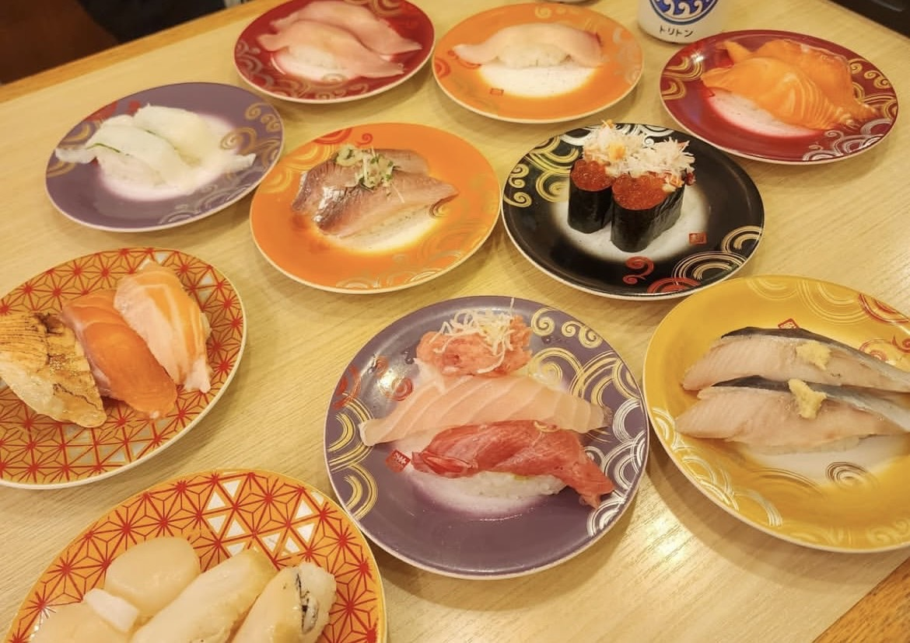
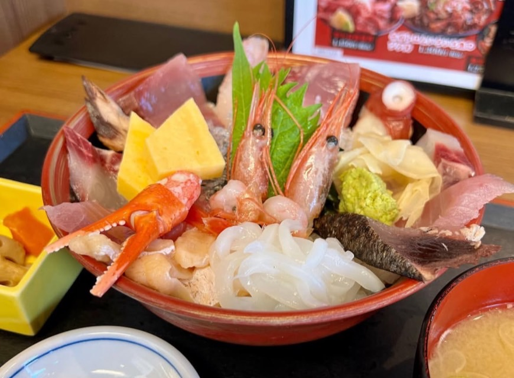
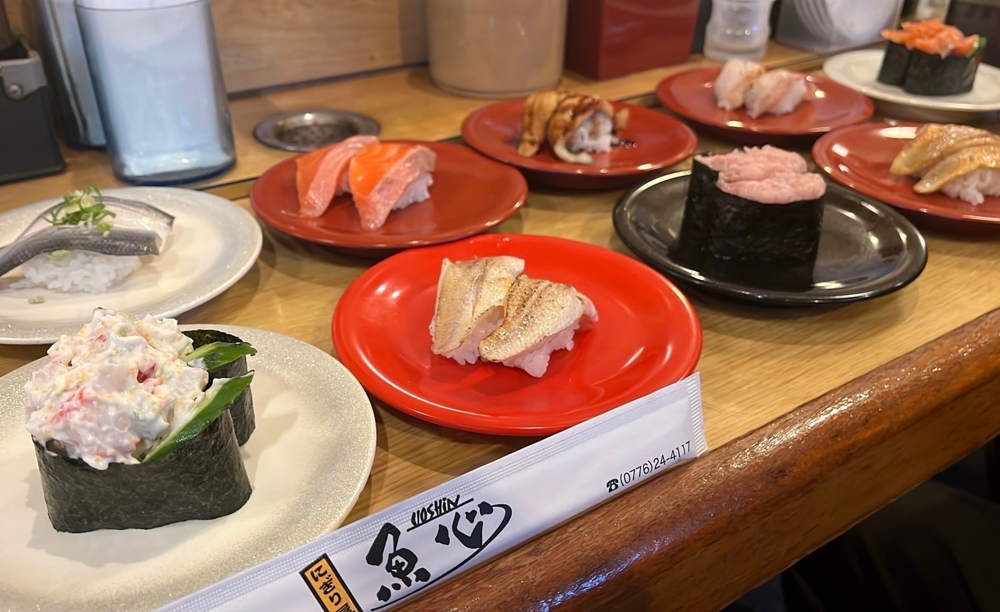
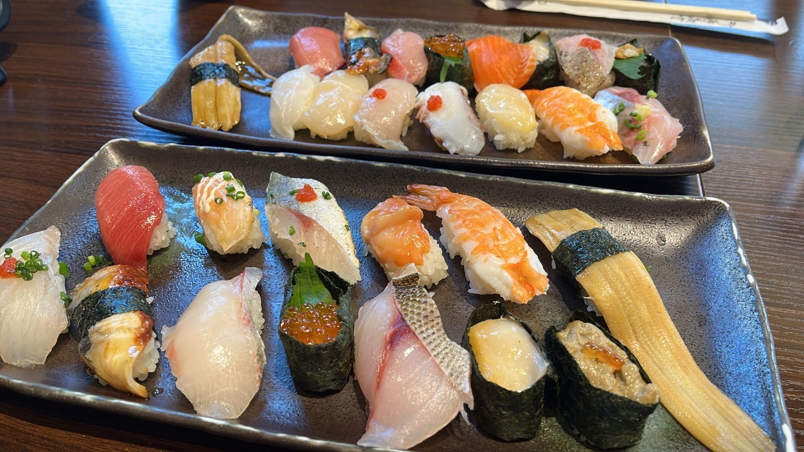

街中の老舗寿司屋などを訪ねることはハードルが高いと考えたり、その雰囲気に恐れ入ってしまう人が多いだろう。実際、寿司というのは嗜好品であり、決して庶民的な食事とは言い難い。また、寿司屋を想像すると、どうしても堅苦しいイメージと直結してしまう。
しかし、日本列島には関西圏に留まらず、お手頃な価格で寿司が頂ける名店が各地に眠っている。北海道や北陸地方（富山県・石川県・福井県など）は言わずもがな、福岡県も海鮮で有名な地だ。これらの地を旅で訪れた際に、ぜひとも立ち寄っていただきたい寿司屋を幾らかばかり紹介しよう。
回転寿し トリトン
（北海道）

『回転寿し トリトン』は、北海道のオホーツク・北見生まれの回転寿司である。回転寿司業界の激戦区である北海道でNO.1を目指して、自慢の目利きが当日厳選した素材を店舗に直接配送、その素材を魚の肉付きや脂の乗り具合を考慮して店内仕込みをする。その自慢のネタを以て握り、いかにお客様に気持ちよく召し上がっていただくかを考え、活気と笑顔が溢れる店内となっている。
企業努力の成果もあり、同店のこだわり抜いた寿司を我々はリーズナブルな価格で頂ける。グランドメニューの一部を取り挙げると、天然まぐろ（270）・サーモン（220）・甘えび（170）であったり、北海道産のたこ足（270）・生ほっきひも軍艦（270）・ほたて（310）・醤油漬けいくら（430）（いずれも1皿2貫・税抜価格）で提供される。他の寿司屋では味わえない価格でハイクオリティを維持できているのは北海道発祥の回転寿司ならではだろう。
なお、北海道だけでなく、東京都にもアトレ品川店・スカイツリータウン・ソラマチ店・池袋東武店の3店舗を展開しており、北海道に訪れなくとも同じクオリティを愉しむことができる。
企業努力の成果もあり、同店のこだわり抜いた寿司を我々はリーズナブルな価格で頂ける。グランドメニューの一部を取り挙げると、天然まぐろ（270）・サーモン（220）・甘えび（170）であったり、北海道産のたこ足（270）・生ほっきひも軍艦（270）・ほたて（310）・醤油漬けいくら（430）（いずれも1皿2貫・税抜価格）で提供される。他の寿司屋では味わえない価格でハイクオリティを維持できているのは北海道発祥の回転寿司ならではだろう。
なお、北海道だけでなく、東京都にもアトレ品川店・スカイツリータウン・ソラマチ店・池袋東武店の3店舗を展開しており、北海道に訪れなくとも同じクオリティを愉しむことができる。
魚がし食堂
（石川県）

三方を日本海に囲まれた石川県沖は暖流と寒流が交わる豊かな漁場である。変化に富んだ環境から様々な魚介が水揚げされる。その中でも、白身の王様と呼ばれて脂身が豊富な「のどぐろ」が有名である。
石川県、特に金沢市は全国有数の観光地である。海鮮だけにフォーカスすれば、金沢駅から10分ほどの場所に「近江町市場」がある。しかし、同市場は食べ歩きなども楽しめる有名な観光地であるものの、国内外問わず観光客が押し寄せているため、商品価格は非常に高騰しており、同市場内に構えている寿司屋や海鮮丼屋に入るとその金額に驚きを隠せざるを得ない。
そこで、地元民が推奨するのは、近江町市場から徒歩で20分ほど移動した所にある「金沢中央卸売市場」という別の市場である。中でも、ここの市場内にある『魚がし食堂』は低価格でハイクオリティな海鮮丼や寿司を提供している。近年、SNS等の影響で同店の存在が知られつつあり、長蛇の列が並ぶ日も増加しているようだが、未だに近江町市場に客足が殺到しているため、穴場スポットとして君臨している。
石川県、特に金沢市は全国有数の観光地である。海鮮だけにフォーカスすれば、金沢駅から10分ほどの場所に「近江町市場」がある。しかし、同市場は食べ歩きなども楽しめる有名な観光地であるものの、国内外問わず観光客が押し寄せているため、商品価格は非常に高騰しており、同市場内に構えている寿司屋や海鮮丼屋に入るとその金額に驚きを隠せざるを得ない。
そこで、地元民が推奨するのは、近江町市場から徒歩で20分ほど移動した所にある「金沢中央卸売市場」という別の市場である。中でも、ここの市場内にある『魚がし食堂』は低価格でハイクオリティな海鮮丼や寿司を提供している。近年、SNS等の影響で同店の存在が知られつつあり、長蛇の列が並ぶ日も増加しているようだが、未だに近江町市場に客足が殺到しているため、穴場スポットとして君臨している。
回転寿司 にぎり屋魚心
（福井県）

福井県も石川県と同様に北陸地方に属しており、豊富な魚介類に恵まれた環境に位置している。福井駅は大阪駅から2時間弱ほどであり、関西圏からのアクセスも抜群である。福井県が誇る最強の寿司屋である『魚心』は、越前鉄道 日華化学前駅から徒歩10分の場所に店を構えている。回転寿司だが、コロナ以降はレーンに寿司を流していないため、板前に直接注文する形となっている。
同店では、握り手1人がテーブル5卓・カウンター15席ほどある店内の握りオーダーを物凄い勢いですべて捌いている。スピードだけではなく、仕事の丁寧さにも驚嘆することだろう。
メニューは日替わりでホワイトボードに掲載されており、同店のインスタグラム（店舗情報に記載）で随時確認することができる。シャリを凌駕するほどのネタの大きさや量、そしてその新鮮さや脂身の口溶け具合に再び驚かされる。特に、程よい脂でもっちりとした身質の「福井サーモン」は必食である。
同店では、握り手1人がテーブル5卓・カウンター15席ほどある店内の握りオーダーを物凄い勢いですべて捌いている。スピードだけではなく、仕事の丁寧さにも驚嘆することだろう。
メニューは日替わりでホワイトボードに掲載されており、同店のインスタグラム（店舗情報に記載）で随時確認することができる。シャリを凌駕するほどのネタの大きさや量、そしてその新鮮さや脂身の口溶け具合に再び驚かされる。特に、程よい脂でもっちりとした身質の「福井サーモン」は必食である。
博多豊一
（福岡県）

福岡県の博多市も海鮮で有名である。博多駅構内やその周辺だけでも九州地方限定の回転寿司や地元の老舗寿司屋まで数多存在するが、ここでは一風変わった寿司屋を選んだ。
『博多豊一』は博多港に隣接している寿司屋である。ここは、回転寿司でもカウンター寿司でもなくバイキング形式というスタイルを採用している。バイキングとは言うものの、食べ放題ではない。店内にはコーン軍艦やいくらから、サーモン・大トロ、さらにはイサキやカジキなど数十種類の寿司がショーケースに陳列されており、すべて一貫120円（税抜）で頂けるのだ。
寿司だけではなく、浜焼や煮物、汁物も別途注文できる。客層は日本人よりも外国人の割合が高めであり、開店直後に訪れても1時間待ちは覚悟の大行列である。どれも新鮮で美味しく、バイキング形式という寿司業界では新たな形態も非常に興味深い。
『博多豊一』は博多港に隣接している寿司屋である。ここは、回転寿司でもカウンター寿司でもなくバイキング形式というスタイルを採用している。バイキングとは言うものの、食べ放題ではない。店内にはコーン軍艦やいくらから、サーモン・大トロ、さらにはイサキやカジキなど数十種類の寿司がショーケースに陳列されており、すべて一貫120円（税抜）で頂けるのだ。
寿司だけではなく、浜焼や煮物、汁物も別途注文できる。客層は日本人よりも外国人の割合が高めであり、開店直後に訪れても1時間待ちは覚悟の大行列である。どれも新鮮で美味しく、バイキング形式という寿司業界では新たな形態も非常に興味深い。
※定休日なし
11:00~15:00・17:00~21:30
※店休日はインスタグラムで確認してください。